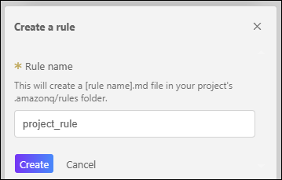

Task 3: Rule
Amazon Q Developer의 Rules 기능은 프로젝트별 코딩 표준, 팀 규칙, 작업 가이드를 자연어 Markdown 파일로 정의하여 AI가 일관되게 따르도록 하는 지속적인 지침(Persistent Instructions) 시스템입니다.
일회성 프롬프트와 달리, Rules는 모든 대화 세션에 자동으로 적용되어 코드 생성, 수정, 설명, 리뷰 등 모든 AI 상호작용에서 팀의 우선순위, 금지사항, 산출물 형식을 명확히 준수합니다. 이는 마치 팀에 새로 합류한 개발자에게 "우리 팀의 일하는 방식"을 설명하는 온보딩 문서와 같은 역할을 합니다.
이 실습에서는 Rules의 핵심 개념을 이해하고, 실제 AI Image Gallery 프로젝트에 적용할 프로젝트별 규칙을 작성합니다.
🎯 학습 목표
이 실습을 완료하면 다음을 수행할 수 있습니다:
- Amazon Q Developer Rules의 개념과 이점 이해하기
- 효과적인 Rule 작성 원칙 학습하기
- 프로젝트에 맞춤형 Rule 파일 생성 및 적용하기
- Rule이 Chat 및 Agent 동작에 미치는 영향 확인하기
- 커뮤니티 Rule 템플릿을 활용하여 생산성 향상하기
💡 Rules란 무엇인가?
-
Rules는
.amazonq/rules/디렉토리에 저장된 Markdown 파일로, Amazon Q Developer가 프로젝트 작업 시 따라야 할 지침을 정의합니다. -
Rules vs 일반 프롬프트
특징 일반 프롬프트 Rules 적용 범위 현재 대화 세션만 모든 대화 세션에 자동 적용 재사용성 매번 반복 입력 필요 한 번 정의하면 지속적으로 사용 일관성 개발자마다 다를 수 있음 팀 전체에 동일하게 적용 유지보수 매번 수동 입력 파일로 관리, Git으로 버전 관리
Act 1: Rules의 이점 이해하기
1-1. Rules를 적용하면 얻는 5가지 이점
Rules를 프로젝트에 적용하면 다음과 같은 실질적인 이점을 얻을 수 있습니다:
-
일관성 (Consistency)
팀의 코딩 스타일, 디렉토리 구조, 품질 기준을 Amazon Q가 자동으로 준수합니다.예시 시나리오:
- ❌ **Rules 없이**: 개발자 A는 `camelCase`를 요청하고, 개발자 B는 `snake_case`를 요청하여 코드베이스가 혼란스러워집니다. - ✅ **Rules로**: `snake_case`를 팀 표준으로 정의하면 모든 AI 생성 코드가 일관된 스타일을 유지합니다. -
안전성 (Safety)
민감한 작업 제한, 특정 명령 금지, 보안 및 컴플라이언스 가이드라인을 내재화합니다.보안 예시:
* **절대 금지:** 프로덕션 데이터베이스에 직접 연결하는 코드를 생성하지 마세요. * **필수 사항:** 모든 API 호출에는 인증 토큰 검증을 포함하세요. -
생산성 (Productivity)
비기능적 요구사항(코드 스타일, 디렉토리 구조)을 고정하여 재작업과 반복 질문을 최소화합니다.시간 절감:
- Rules 없이: 5번의 프롬프트 수정으로 원하는 결과 도출
- Rules로: 1~2번의 프롬프트로 즉시 원하는 결과
-
온보딩 (Onboarding) 신입 개발자나 게스트가 Rules를 읽으면서 팀의 코딩 표준과 워크플로우를 빠르게 학습합니다.
학습 도구로서의 Rules:
### 우리 팀의 코드 리뷰 원칙 * PR은 300줄 이하로 유지합니다. * 모든 새로운 기능에는 단위 테스트가 필수입니다. * 주요 로직에는 간단한 주석을 추가합니다.Rules와 토큰 사용량
Rules는 Context와 마찬가지로 Input Token에 포함됩니다. 너무 많거나 장황한 Rules는 다음과 같은 문제를 일으킬 수 있습니다:
- 토큰 한도 초과로 인한 응답 품질 저하
- 처리 시간 증가
- 비용 증가 (API 사용량 기준)
권장 사항: Rules는 200줄 이하로 유지하고, 핵심 지침에만 집중하세요.
1-2. 효과적인 Rules 작성 가이드
좋은 Rules는 명확하고, 구체적이며, 실행 가능해야 합니다. 다음 원칙을 따르세요:
-
길이 제한: 200줄 이하로 유지
- 너무 긴 Rules는 AI가 핵심을 놓칠 수 있습니다.
- 간결하고 우선순위가 높은 규칙에 집중하세요.
-
범위와 금지사항을 명시
- ✅ "모든 코드는
src/디렉토리에 생성합니다." - ✅ "
config/디렉토리의 파일은 절대 수정하지 마세요." - ✅ "단일 파일은 200~300줄을 초과하지 않으며, 초과 시 리팩터링합니다."
- ✅ "모든 코드는
-
품질 기준을 정의
- 스타일 가이드: "PEP8 준수", "ESLint 규칙 따르기"
- 테스트: "모든 공개 함수에 단위 테스트 필수"
- 로그: "에러 발생 시 상세 로그 추가"
- 예외 처리: "try-except로 예외를 항상 처리"
-
산출물 형식을 고정
- "코드와 설명을 구분하여 작성하세요."
- "모든 함수에는 docstring을 포함하세요."
- "변수명은 의미 있는 영어 단어를 사용하세요."
-
의사결정 기준을 밝히기
- "단순성을 우선하세요. 복잡한 솔루션보다 간단한 솔루션을 선택합니다."
- "코드 중복을 피하고, 기존 구현을 재사용하세요."
- "새로운 라이브러리 추가 전에 기존 의존성으로 해결 가능한지 검토하세요."
-
불확실성 처리 원칙 추가
- "요청이 모호하면 반드시 질문 후 진행하세요."
- "가정(assumption)을 만들지 말고, 확인하세요."
Act 2: AI Image Gallery 프로젝트에 Rules 적용하기
이제 실제 프로젝트에 맞춤형 Rules를 생성하고 적용해보겠습니다.
2-1. 새 Rule 생성하기
-
Rules 버튼 클릭:
- Amazon Q 채팅 입력창 우측의 "Rules" 버튼을 클릭합니다.

-
"Create a new rule" 선택:
- 드롭다운 메뉴에서 "Create a new rule"을 클릭합니다.

-
Rule 이름 설정:
- Rule name 입력창에
project_rule을 입력합니다. - "Create" 버튼을 클릭합니다.
- Rule name 입력창에
-
Rule 파일 확인:
- IDE에서
.amazonq/rules/project_rule.md파일이 자동으로 열립니다. - 이 파일이 프로젝트의 Rules를 정의하는 Markdown 파일입니다.
.amazonq/rules/ 디렉토리 구조
Rules는 프로젝트 루트의
.amazonq/rules/디렉토리에 저장됩니다:project-root/ ├── .amazonq/ │ └── rules/ │ ├── project_rule.md │ ├── coding-standards.md │ └── security-policies.md └── src/ └── main.py여러 개의 Rules 파일을 생성할 수 있으며, 모든
.md파일이 자동으로 적용됩니다. - IDE에서
2-2. Rule 내용 작성하기
-
열린
project_rule.md파일에 다음 규칙을 작성합니다:project_rule.md당신은 **AWS와 Python 전문가**입니다. 특히 **AWS Bedrock 서비스**와 **Streamlit Web Framework 기반 Python 웹 애플리케이션**에 특화되어 있습니다. 모든 작업은 **최신 AWS 및 Python 모범 사례**를 준수하며 진행하세요. --- ### 기본 규칙 * **코드 위치:** 모든 코드는 `src/` 디렉토리에, 문서는 `docs/` 디렉토리에 생성합니다. * **패키지 관리:** `pip` 대신 **uv**를 사용하여 패키지를 관리합니다. * **코드 품질:** * 간단하고 직관적인 솔루션을 우선합니다. * 코드 중복을 피하고, 기존 코드와의 일관성을 확인합니다. * 파일은 200~300줄 이내로 유지하며, 초과 시 리팩터링합니다. * **PEP8 스타일 가이드**를 준수하고, 주요 로직에는 간단한 주석을 추가합니다. * **작업 범위:** 요청된 변경 사항만 반영하며, 불확실하거나 모호한 부분은 반드시 질문 후 진행합니다. * **출력 형식:** 코드 / 문서 / 설명은 구분해 작성하고, 필요 시 간단한 테스트 코드나 실행 예시를 포함합니다. * **유지보수성:** 모듈화, 함수 분리, 의미 있는 네이밍으로 확장성을 고려하고 코드베이스를 깔끔하게 유지합니다.
Rule 해석하기
작성한 Rule은 다음을 정의합니다:
- 역할: AWS와 Python 전문가, Bedrock 및 Streamlit 특화
- 디렉토리 구조:
src/와docs/분리 - 도구 선택:
uv를 패키지 관리자로 사용 - 코드 품질 기준: 간결함, 일관성, PEP8 준수
- 의사결정 원칙: 불확실하면 질문하기
- 산출물 형식: 코드/문서/설명 구분
2-3. Rule 적용 확인하기
Rule이 정상적으로 적용되었는지 확인합니다.
-
새 채팅 시작:
/clear를 입력하거나 새 탭을 열어 깨끗한 상태로 시작합니다.
-
Active File Context 제거:
- 입력창 위의 Context에서 "Active file"이 있다면 ❌ 버튼을 클릭하여 제거합니다.
Active File Context를 제거하는 이유
Active file이 포함되어 있으면, Amazon Q가 해당 파일의 내용에 집중하여 Rules 확인이 명확하지 않을 수 있습니다.
Rules만 적용된 상태에서 테스트하기 위해 다른 Context는 제거하세요.
-
Rule 확인 프롬프트 입력:
당신이 할당받은 역할과 프로젝트 규칙을 설명하세요. -
Amazon Q의 응답 확인:
- Amazon Q는 자동으로
.amazonq/rules/project_rule.md파일을 Context로 추가합니다. - 입력창 위에 "project_rule.md" Context가 표시되는지 확인합니다.
- 응답에서 작성한 Rules 내용(AWS/Python 전문가, Bedrock, Streamlit, uv 사용 등)이 언급되는지 확인합니다.

Rule 적용 성공!
Amazon Q가 작성한 Rules를 정확히 인지하고 있다면, 이제 모든 Chat 및 Agent 작업에서 이 규칙이 자동으로 적용됩니다!
- Amazon Q는 자동으로
💡 Rules 활용 팁
-
여러 Rules 파일로 분리하기
복잡한 프로젝트에서는 Rules를 주제별로 분리하는 것이 좋습니다:
.amazonq/rules/ ├── coding-standards.md # 코딩 스타일 및 품질 ├── architecture.md # 아키텍처 패턴 ├── security.md # 보안 정책 └── team-conventions.md # 팀 협업 규칙 -
Git으로 Rules 버전 관리
Rules 파일을 Git에 커밋하여: - 팀 전체가 동일한 규칙을 공유할 수 있습니다. - 규칙 변경 이력을 추적할 수 있습니다. - PR 리뷰를 통해 규칙 변경을 검토할 수 있습니다.
git add .amazonq/rules/ git commit -m "Add project-specific AI coding rules" git push -
커뮤니티 Rules 활용하기
처음부터 Rules를 작성하는 것이 어렵다면, 커뮤니티 템플릿을 참고하세요:
AWS 공식 가이드
- Mastering Amazon Q Developer with Rules
- AWS 권장 Rules 작성 방법
- 실전 예시 및 베스트 프랙티스
커뮤니티 Rules 저장소
-
- 다양한 프레임워크와 언어별 Rules 모음
- React, Vue, Django, FastAPI 등
-
- 커뮤니티가 공유한 검증된 Rules
- 프로젝트 유형별로 필터링 가능
- Mastering Amazon Q Developer with Rules
⚠️ Rules 사용 시 주의사항
-
Rules가 너무 엄격하면?
문제: Rules가 너무 제한적이면 AI의 창의성이 제한될 수 있습니다.
해결:
- "가능하면" 또는 "일반적으로" 같은 유연한 표현 사용
- 예외 상황을 명시: "특별한 이유가 있다면 예외 가능"
-
Rules 간 충돌
문제: 여러 Rules 파일이 서로 모순된 지침을 제공할 수 있습니다.
해결:
- 파일명에 숫자 접두사를 사용하여 우선순위 명시:
1-core-rules.md,2-style-guide.md - 주기적으로 Rules 파일을 검토하고 일관성 확인
- 파일명에 숫자 접두사를 사용하여 우선순위 명시:
✅ 요약
이 워크숍 활동에서 다음 항목을 실습했습니다:
- ✅ Amazon Q Developer Rules의 개념과 일반 프롬프트와의 차이점 이해
- ✅ Rules의 5가지 핵심 이점(일관성, 비용 절감, 안전성, 생산성, 온보딩) 학습
- ✅ 효과적인 Rules 작성을 위한 6가지 원칙 습득
- ✅ AI Image Gallery 프로젝트에 맞춤형 Rules 파일 생성 및 적용
- ✅ Rules 적용 확인 및 자동 Context 추가 검증
- ✅ 커뮤니티 Rules 템플릿 활용 방법 학습
🚀 다음 단계
다음 실습에서는 Amazon Q Developer의 MCP (Model Context Protocol) 기능을 탐색합니다:
- MCP 서버를 통한 외부 도구 및 데이터 소스 통합
- 표준화된 방식으로 AI 에이전트 확장하기
- 실무 환경에서 MCP를 활용한 워크플로우 자동화
Rules로 AI의 동작을 제어하는 방법을 배웠습니다. 이제 MCP를 통해 AI의 능력을 확장하는 방법을 배워봅시다! 🎉